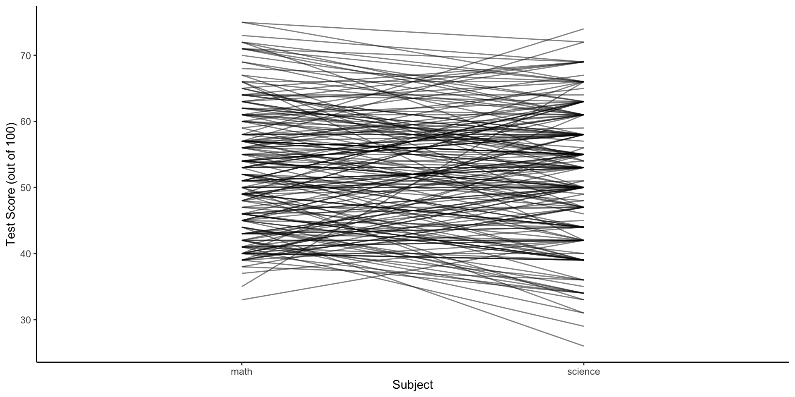

| id | math | science | diff |
|---|---|---|---|
| 70 | 41 | 47 | -6 |
| 121 | 53 | 63 | -10 |
| 86 | 54 | 58 | -4 |
| 141 | 47 | 53 | -6 |
Seminar 06
MA22004
Dr Eric Hall • ehall001@dundee.ac.uk
2024-10-23
Announcements
Attendance

Reminders
- Discuss critical components of statistical studies at Thu workshop.
- Discuss worksheet 5 at Fri workshop.
- Lab 4 due Fri 2024-10-25 at 17:00.
Outline of today
- Comparing means
- for paired observations
- for independent observations
- Comparing proportions
- Tennis?
- Comparing variances
Comparing means
Inferences for means
Today we compare means based on two samples from different groups.
I.e., \bar{X} = \frac{1}{m} \sum_{i=1}^m X_i \,, \qquad \text{iid}~X_1, \dots, X_m \sim \mathsf{N}(\mu_X, \sigma_X^2) and \bar{Y} = \frac{1}{n} \sum_{i=1}^n Y_i \,, \qquad \text{iid}~Y_1, \dots, Y_n \sim \mathsf{N}(\mu_Y, \sigma_Y^2)
Two types of sampling
Comparisons for means fall into two types:
sets of observations are dependent (paired )
sets of observations are independent (across groups )
What is independent?
The samples must still be independent within each set of observations.
When sets of observations are paired between groups…
Paired data
Paired
When two sets of observations have a special correspondence (i.e. are dependent) the sets of observations are said to be paired.
E.g., groups can be related by being the same group of people, the same item, or being subjected to the same conditions.
What is the approach?
To analyze paired data we will consider the difference of each paired observation:
\mu_{D} = \mu_{X} - \mu_{Y}
Paired math & science scores
Consider 200 observations of students that took a standardized science and math test. How are the distributions similar? How are they different?
Paired or not?
Can the math and science scores for a given student be assumed to be independent of each other?
Paired!
| id | math | science | diff |
|---|---|---|---|
| 70 | 41 | 47 | -6 |
| 121 | 53 | 63 | -10 |
| 86 | 54 | 58 | -4 |
| 141 | 47 | 53 | -6 |
Independence?
Data is collected independently (students sit tests independently), but the scores across subjects for a single student are dependent (correlated) in practice.
Means of paired data
Pop. Parameter
\mu_{\text{diff}} Average difference between math and science scores of all students.
Point estimator
\bar{x}_{\text{diff}} Average difference between math and science scores of 200 sampled students.
Hypothesis test for paired data
H_0 : \mu_{\text{diff}} = 0\,, \quad \text{(there is no difference between scores)} \mathsf{vs} H_a : \mu_{\text{diff}} \neq 0\,, \quad \text{(there is a difference between scores)}
Calculate an appropriate test statistic for the new parameter \mu_{\text{diff}}.
\bar{x}_{\text{diff}} = 0.795 \,,\quad s_{\text{diff}} = 8.2938 \,,\quad n_{\text{diff}} = 200\,.
Nothing new!
Carry out inference on a single sample population mean.
Calculate test statistic
Let \alpha = 0.10
H_0 : \mu_{\text{diff}} = 0
H_a : \mu_{\text{diff}} \neq 0
\bar{x}_{\text{diff}} = 0.7950
s_{\text{diff}} = 8.2938
n_{\text{diff}} = 200
Recap: P-values
How does the P-value relate to the reference distribution? How should one interpret the P-value?
Ladder plot

Some differences will be positive, some negative. It is not surprising that we fail to reject the null hypothesis.
When sets of observations are independent between groups…
Difference of means: easy cases
The parameter of interest \mu_{D} = \mu_{X} - \mu_{Y}.
General interval estimate: \text{point estimate} \pm \text{margin of error}
- if the populations are normal with known variances, or
- if the populations have unknown variances but the sample sizes are large,
then the margin of error uses a normal reference distribution and the standard error is easy to compute:
\widehat{\sigma}_{(\bar{x} - \bar{y})} = \sqrt{\frac{s_x^2}{m} + \frac{s_y^2}{n}}
Difference of means: unpaired \mathsf{t}
General interval estimate: \text{point estimate} \pm \text{margin of error}
How to compute the margin of error if the populations are normal (with unknown variance) but the sample size is small?
For the parameter of interest \mu_{D} = \mu_{X} - \mu_{Y}: (\bar{x} - \bar{y}) \pm t_{\alpha/2, \nu} \cdot \widehat{\sigma}_{(\bar{x} - \bar{y})}
What should the…
… standard error be?
… dof be?
Tricky parts… pooled estimators
If the population variances are (assumed) the same, then replace standarded error with:
\sqrt{s_p^2 \left(\frac{1}{m} + \frac{1}{n}\right)}\,,
which uses the pooled estimator for single parameter \sigma^2: S_p^2 = \frac{m-1}{m+n-2} S_X^2 + \frac{n-1}{m+n-2}S_Y^2\,.
Tricky parts… Welch’s formula
Dof is given by (rounded down to the nearest integer) \begin{align*} \nu &= \frac{ \left( \frac{s_X^2}{m} + \frac{s_Y^2}{n} \right)^2}{\frac{(s_X^2 / m)^2}{m-1} + \frac{(s_Y^2/n)^2}{n-1}} \\ &= \frac{ \left( s_{\bar{X}}^2 + s_{\bar{Y}}^2 \right)^2}{\frac{s_{\bar{X}}^4}{m-1} + \frac{s_{\bar{Y}}^4}{n-1}} \end{align*}

Tricky parts… dof (estimate?)
Complicated to compute true degrees of freedom (dof) \nu!
A conservative estimate for the dof is
\nu = \min(m-1, n-1)\,.
Check conditions
- Independence of samples both within and between groups.
- Sample size and skew (more skewed distributions need larger number of samples).
Comparing proportions
The task
Elect:
- 1 “good” athlete,
- 1 “poor” athlete, &
- 2 judges
- Each athlete will pre-record anticipated success ratio.
- Each athlete will take 20 shots, in turn.
- Calculate success ratios.
We will use this data to make some inferences about the true success rations for each athlete.
Population proportions
Consider a sample of size m from a population containing a proportion p_X of individuals satisfying a given property. Denote the sample proportion by \widehat{p}_X. Likewise, n, p_Y, \widehat{p}_Y.
Assume the samples from the X and Y populations are independent.
The natural estimator for the difference in population proportions p_X - p_Y is the difference in the sample proportions \widehat{p}_X - \widehat{p}_Y\,.
Population proportions
Assuming samples are much smaller than population size,
\mu_{(\widehat{p}_X - \widehat{p}_Y)} = \mathop{\mathrm{\mathbf{E}}}[\widehat{p}_X - \widehat{p}_Y] = p_X - p_Y\,, and \sigma_{(\widehat{p}_X - \widehat{p}_Y)}^2 = \mathop{\mathrm{Var}}[\widehat{p}_X - \widehat{p}_Y] = \frac{p_X(1-p_X)}{m} + \frac{p_Y(1-p_Y)}{n}\,,
because count of individuals satisfying given property indep. draws from \mathsf{Binom}(m, p_X) and \mathsf{Binom}(n, p_Y).
Population proportions and CLT
If m and n are large (say > 30), difference between to proportions:
\widehat{p}_X - \widehat{p}_Y \sim \mathsf{N}\left(p_X - p_Y, \frac{p_X(1-p_X)}{m} + \frac{p_Y(1-p_Y)}{n}\right)\,.
Thus, (standardizing) \frac{\widehat{p}_X - \widehat{p}_Y - (p_X - p_Y)}{\sqrt{\frac{p_X(1-p_X)}{m} + \frac{p_Y(1-p_Y)}{n}}} = Z \sim \mathsf{N}\left(0, 1\right)\,.
100(1-\alpha)\% CI for p_X - p_Y
\widehat{p}_X - \widehat{p}_Y \pm z_{\alpha/2}\sqrt{\frac{\widehat{p}_X (1 - \widehat{p}_X)}{m} + \frac{\widehat{p}_Y (1 - \widehat{p}_Y)}{n}}\,,
Rule of thumb
Inference suitable when m \widehat{p}_X, m (1 - \widehat{p}_X), n \widehat{p}_Y, and n (1-\widehat{p}_Y) are greater than or equal to 10.
Why use the rule of thumb above? What assumptions does the above rule of thumb attempt to satisfy?
Tennis Ball Success Ratios
Typical observed success is 7/20 to 9/20.
Suppose true success ratios p_1 and p_2.
- Construct a 95% confidence interval for (p_1 - p_2).
- Is the difference in proportions statistically significant at level 0.05?
Power
How many tries would be necessary to be likely to find a statistically significant result?
Hypothesis test on equality
If we are considering a hypothesis test concerning the equality of the population proportions, H_0 : p_X - p_Y = 0 \,, then we assume p_X = p_Y as our default position.
Because the null assumes p_X = p_Y …
…we must replace the standard error with a pooled estimator for the standard error of the population proportion, \widehat{p} = \frac{m}{m + n} \widehat{p}_X + \frac{n}{m + n} \widehat{p}_Y \,.
Pooled estimator
Consider H_0 : p_X - p_Y = 0.
The test statistic is Z = \frac{\widehat{p}_X - \widehat{p}_Y}{\sqrt{\widehat{p} (1 - \widehat{p}) \left( \frac{1}{m} + \frac{1}{n} \right)}} \,.
Important
Note the test statistic uses the pooled estimator \widehat{p}.
Hypothesis test for difference of proportions
For a test at level \alpha:
If H_a : p_X - p_Y > 0, then P = 1 - \Phi(z), i.e., upper-tail R = \{z > z_{\alpha}\}.
If H_a : p_X - p_Y < 0, then P = \Phi(z), i.e., lower-tail R = \{z < - z_{\alpha}\}.
If H_a : p_X - p_Y \neq 0, then P = 2(1-\Phi(|z|)), i.e., two-tailed R = \{|z| > z_{\alpha/2}\}.
Rule of thumb
Inference suitable if m \widehat{p}_X, m (1-\widehat{p}_X), n\widehat{p}_Y, n(1-\widehat{p}_Y) are all greater than 10.
Comparing variances
The setting
Consider a random sample X_1, \dots, X_m \sim \mathsf{N}(\mu_X, \sigma_X^2) and an independent random sample Y_1, \dots, Y_n \sim \mathsf{N}(\mu_Y, \sigma_Y^2)\,.
Warning
How can we make inferences about unknown parameters \sigma_X^2 and \sigma_Y^2?
Comparing variances: ratio
Compare the ratio \sigma_X^2 / \sigma_Y^2 (not the difference).
The rv F = \frac{S_X^2 / \sigma_X^2}{S_Y^2 / \sigma_Y^2} \quad \sim \mathsf{F}(m-1, n-1)\,.
That is, F has an \mathsf{F} distribution with df \nu_1 = m-1 and \nu_2 = n-1.
The \mathsf{F} distribution is related to ratios of \chi^2 rvs…
\mathsf{F} distribution
\mathsf{F}(\nu_1, \nu_2) has integer ‘numerator dof’ \nu_1 >0 and ‘denominator dof’ \nu_2 > 0.
Making comparisons with a ratio
The statistic F comprises the ratio of variances \sigma_X^2 / \sigma_Y^2 and not the difference; therefore, the plausibility of \sigma_X^2 = \sigma_Y^2 will be based on how much the ratio differs from 1.
For H_0 : \sigma_X^2 = \sigma_Y^2, f = \frac{s_X^2}{s_Y^2} and the P-values are determined by the \mathsf{F}(m-1, n-1) curve where m and n are the respective sample sizes.
Hypothesis test for comparing variances
For a hypothesis test at level \alpha, we use the following procedure:
If H_a : \sigma_X^2 > \sigma_Y^2, then P-value is A_R = {} area under the \mathsf{F}(m-1, n-1) curve to the right of f.
If H_a : \sigma_X^2 < \sigma_Y^2, then P-value is A_L = {} area under the \mathsf{F}(m-1, n-1) curve to the left of f.
If H_a : \sigma_X^2 \neq \sigma_Y^2, then P-value is 2 \cdot \min(A_R, A_L).
Note
Assume the population distributions are normal and the random samples are both independent of one another.
100(1-\alpha)\% CI for ratio \sigma_X^2 / \sigma_Y^2
For the ratio of population variances \sigma_X^2 / \sigma_Y^2, is given by \left(\frac{1}{F_{\alpha/2, m-1, n-1}} \frac{s_X^2}{s_Y^2} \,, \frac{1}{F_{1-\alpha/2, m-1, n-1}} \frac{s_X^2}{s_Y^2} \right)\,.
Summary
Today we discussed CI and hypothesis tests for comparing: means (paired and independent), proportions, and variances.
We carried out an experiment to compare proportions.
Today’s materials
Slides posted to https://dundeemath.github.io/MA22004-seminar06.